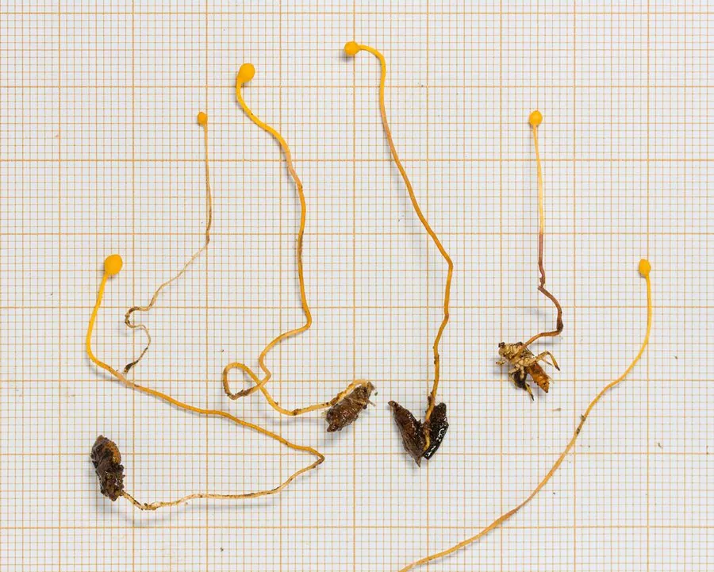

真菌 · 真菌界
蜂头虫草 Cordyceps sphecocephala

虫生真菌，寄生于胡蜂等蜂类，子座自虫体伸出、顶端膨大如蜂头，生于热带与亚热带林下，不感染人。
- 分类
- 门子囊菌门纲粪壳菌纲目肉座菌目科虫草科属虫草属
- 栖息环境
- 热带与亚热带林下，寄生于胡蜂等蜂类，高湿时发生
- 地理分布
- 亚洲热带与亚热带分布，中国南方、东南亚有记录
- 保护级别
- 暂无评估；依赖森林生态与宿主种群
物种志
蜂头虫草的菌丝在蜂体内生长，感染后期自虫体（多为蜂的胸部或头部）伸出细长子座。子座淡黄至橙黄色，长 2–8 厘米，顶端膨大呈球形或卵形，形似蜂头，表面密生子囊壳，内含子囊与线状孢子。无性阶段产生分生孢子。
蜂头虫草寄生于胡蜂、蜾蠃等蜂类，多见于热带与亚热带林下，湿度高时发生。被感染的蜂常固定在枝条或叶片上死亡，子座随后伸出并释放孢子。它与冬虫夏草同属虫草类，但寄主不同、药效成分不同，不应混用。虫草类真菌对人不致病，但野外采集的标本可能带其他霉菌，接触后应洗手；同时不应把野生虫草当作药材自行服用。该菌在人工培养基上生长缓慢，难以大量培养。
形态与习性
- 宿主胡蜂、蜾蠃等蜂类
- 子座淡黄至橙黄，长 2–8 厘米，顶端膨大如蜂头
- 孢子子囊孢子线状，无性阶段产分生孢子
- 生境热带、亚热带林下，高湿环境
- 与冬虫夏草同属虫草类但寄主不同，不可混用
- 安全性不感染人，野生标本勿自行入药
趣味知识
- 蜂头虫草的子座顶端膨大呈球状，形状像一只小蜂头，因此得名。
- 被感染的蜂会固定在枝条上死亡，子座从虫体伸出释放孢子。
- 它与冬虫夏草同属虫草类，但寄主是蜂而非蝙蝠蛾幼虫，成分与功效不能等同。
- 野生虫草常混有杂菌，直接泡酒或磨粉服用存在风险。